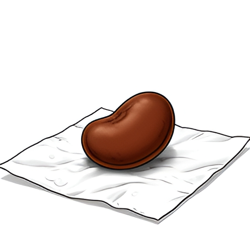
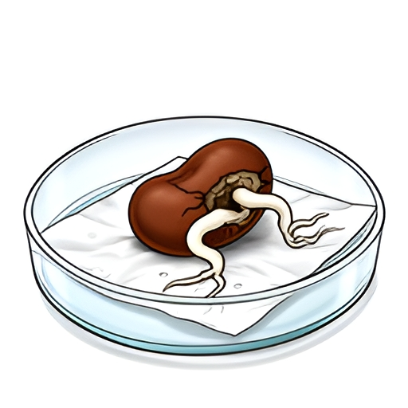

01Смотри! Семя набухло, но корня всё ещё нет
Несоответствие сценарию: семя и влажная бумага видны, но чашка Петри не изображена.
Макросъемка семени фасоли в чашке Петри
Семя фасоли поглощает воду, распухает, но не прорастает сразу
Биология · 6 класс · 2 кадра
Пилот после обновления: Qwen создал сценарий, FLUX.2 dev — иллюстрации. Описания кадров теперь проверяются и при необходимости переписываются в обычные английские предложения. Результат стал ближе к сценарию, но предметные ошибки остались и отмечены ниже.

01Смотри! Семя набухло, но корня всё ещё нет
Семя фасоли поглощает воду, распухает, но не прорастает сразу

02Посмотри! Из трещины выходит белый корешок
Семя использует запасы питательных веществ для роста корня, влага отвечает за активацию процессов